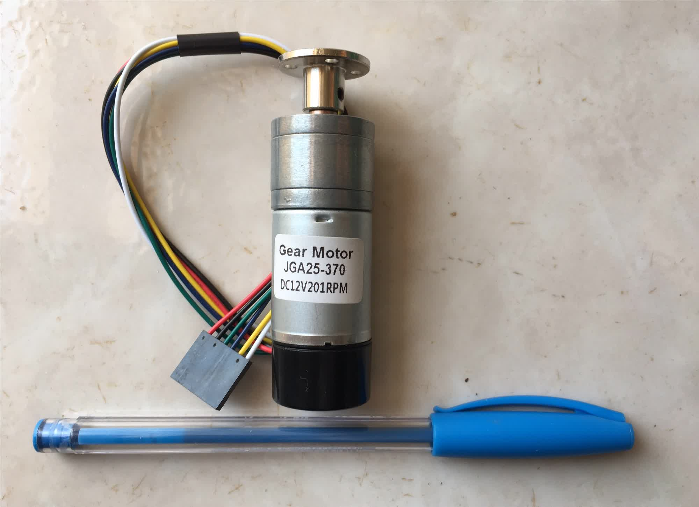
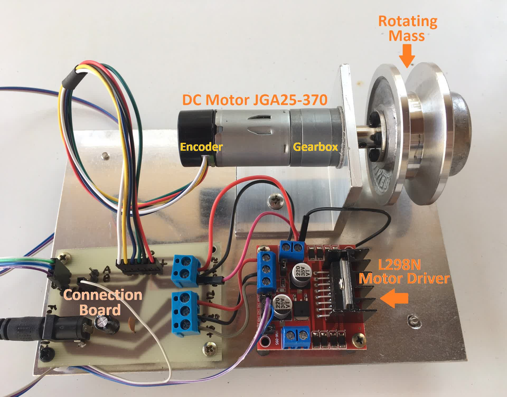
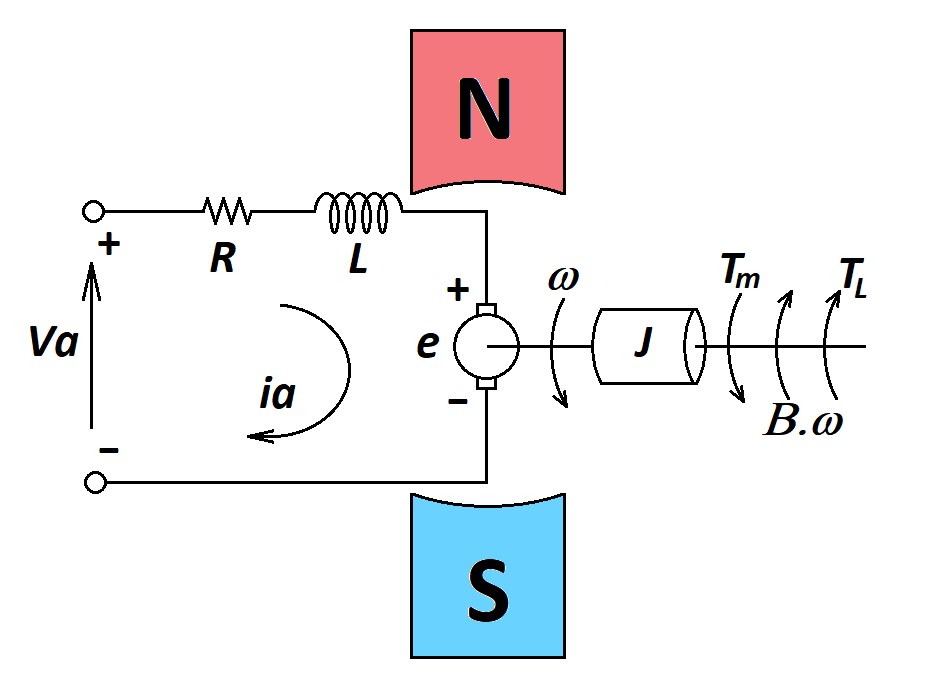
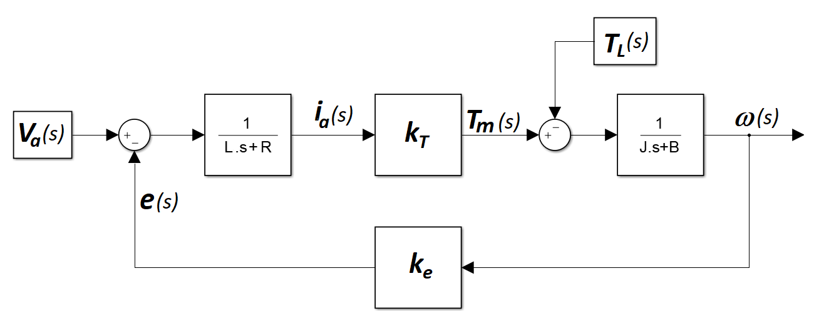
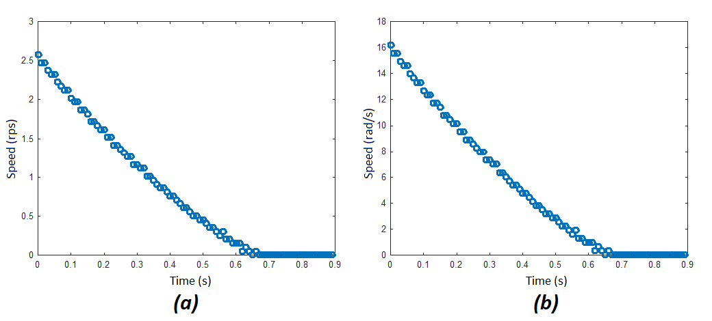
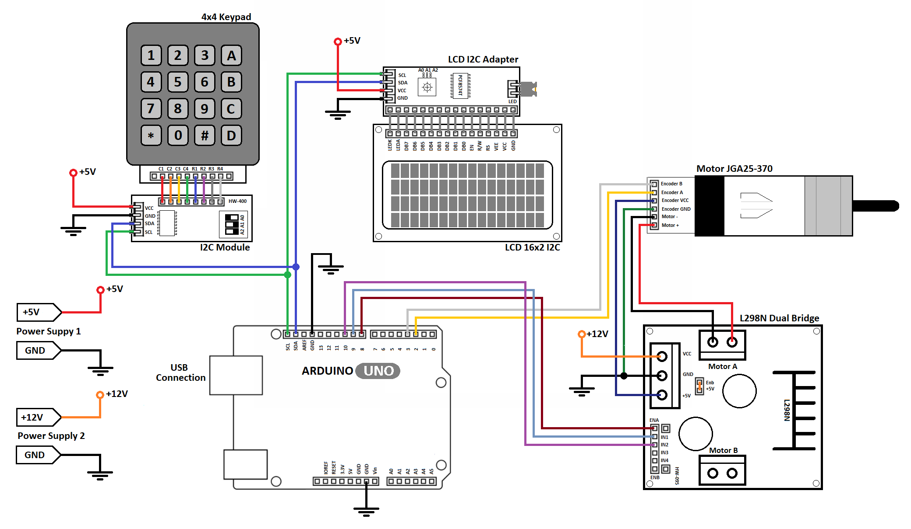

There are a lot of applications using the motor JGA25-370 controlled by Arduino Platform.
For tuning the control compensator, the plant transfer function is needed, but there is not enough data in motor datasheet to determine it.
We can find a lot of parameter estimation and identification algoritms in the literature, which implies a complex implementation and requires a sofisticated lab structure.
In this context, this page presents a simple proposal to get the DC motor parameters using a simple lab structure:
PC computer
Arduino UNO
DC Motor JGA25-370 with gear box and encoder (Note: a second unit was used in one of the tests.)
L298N Motor Driver Module
4x4 Keypad connected to HW-400 PCF8574 I2C Serial IO expansion board (Library available in github)
LCD with I2C Serial Interface Module (Library available in github).
Jumpers for connections
Hikari HX-120 LCR Meter
Hikari HM-2090 Digital Multimeter
DC Power Suppliers: 5V (LCD, keypad and interface modules - to not overload voltage regulator in Arduino board), 12V (L298N bridge), USB or 9V* power source (to supply Arduino Board).
* Recommend if some analog input will be used, since it provides a more stable voltage reference to ADC.
It is important to emphasize that the intention is to keep the method simple, then, a simple parameter estimation will be obtained to support the motor control strategies. For better results, the reader has to look for more precise identification algorithms and better lab resources.
Several dynamic aspects of the system were neglected in order to obtain only the parameters of the second-order dynamic model of a DC machine.
The Plant - Motor JGA25-370
JGA25-370 is a brushed DC motor, which the magnetic field is generated by permanent magnets and it has an integrated gearbox
Fig.1 presents the JGA25-370 motor and the basic parameters available in the internet can be seen in Table I.

Fig.1 - Motor JGA25-370
Table I - JGA25-370 Datasheet Parameters
Quantity
Value
Unit
Quantity
Value
Unit
Nominal voltage
12
V
Gearbox relation
45:1
No-load speed
188
rmp
Nominal speed
131
rpm
No-load current
50
mA
Nominal current
240
mA
Encoder relation
11
pulses/turn
Nominal torque
1.26
Kgf.cm
Unfortunately the data necessary to write the dynamic equations of JGA25-370 are not available in datasheet (Table I), so you can use the procedure presented below to get them.
JGA25-370 is a small motor implying a low time constant. If the mechanical load related to the application has low inertia too, this can lead a very fast system, implying the necessity of a high sample rate to measure and control the system, as well as a powerfull microcontroller. As the idea here is to use a simple microcontroller, the system inertia moment was increased by coupling a rotating mass, as seen in Fig. 2

Fig.2 - Laboratory Prototype
Dynamic Model of a DC Motor
In the present proposal, it will be considering the simple model of a DC motor. Dynamic aspects of the gearbox will be neglected.
The scheme of the DC motor is shown in Fig.3.
The loop equation of the electrical circuit of the armature (1) and the mechanical equation (2) of the motor are presented below, where:
JGA25-370 doesn't have field winding and the magnetic field is produced by permanent magnets, then, for a constant magnetic field, the motor torque is proportional to the armature current, and the electromotive force is proportional to the speed, as determined by (3) and (4), respectively, where:
kT is the torque constant;
ke is back-emf constant.
$$ T_m=k_T\ i_a \ \ (3)$$
$$ e=k_e\ \omega \ \ (4) $$

Fig.3 - DC Motor Scheme
Considering the energy conversion is easy to see that kt = ke:
Based on (1)-(4) and (7), it is possible to write the motor transfer function (8), which the respective diagram is presented in Fig.4.
$$\frac{\omega\left(s\right)}{V_a\left(s\right)}=\frac{k}{\left(Js+B\right)\left(Ls+R\right)\ +k^2} \ \ (8) $$

Fig.4 - DC Motor Transfer Function Diagram
Electrical Parameters of Armature
The electrical parameters of armature were measured using the HIKARI HX-120 LCR digital meter:
Armaure resistance = 4.98 Ω
Armaure inductance = 3.8 mH
Torque and Back-EMF Constants
Two JGA25-370 were coupled together. One of them was connected to L298N Bridge, controlled by the Arduino, in way that the speed could be varied. The armature voltage was measured in the second one. The results are presented below:
Table II - Speed and Armature Voltage Measurements
Speed (rps)
Speed (rad/s)
Armature Voltage (V)
2.07
13.0
7.5
1.82
11.44
6.55
1.52
9.55
5.51
1.26
7.92
4.4
According to (4), the Table II data should represent a linear function crossing the origin, but considering the linear regression of these points, we can see some deviation. As it will be shown later, the lower the speed, the lower the speed measurement precision. Considering the highest speed, we have:
$$ k_e = 0.577 V/(rad/s) \ \ (9) $$
In order to determine the torque constant, the L298N bridge was connected to a 12V power supply, and the motor was driven with the maximum duty cycle, resulting in Va=10.6V, due to the saturation voltage over the bridge transistors, Ia=106mA and ω=2.78 rps (17.467 rad/s), which implies P=1.1236 W delivered to the motor.
Subtracting the armature losses from the power delivered to the motor, we have:
As it was expected, comparing (9) and (11), ke ≅ kT.
Mechanical Parameters
The system in Fig. 2 will be modeled according to the scheme presented in Fig. 4. The dynamic effect of the gearbox will be neglected, and it will be considered a unique inertia moment J, a friction coefficient B, and constant load torque TL in the opposite direction of the rotation.
The load torque (12) presents a non-linearity at the origin, as can be seen in Fig. 5. But in the following analysis, the torque can be assumed to be piecewise linear.
In order to determine the inertia moment J, it was considered the system deceleration curve, which is presented in Fig. 6. That is, the motor was accelerated, then when the speed achieved the steady state, the armature circuit was open. After that we have the motor deceleration until the speed reaches zero.
As can be seen in Fig. 6, the derivative of speed presents a discontinuity when the speed reaches zero. This is due to the non-linearity of load torque shown in Fig. 5. To calculate J only the part corresponding to the linear response of the deceleration curve will be considered.
Each blue circle in Fig.6 represents a speed sample. The initial speed is 2.58 rps. This implies 2.58*45=116.1 rps in the internal motor axis. In order to measure the speed the signals A and B of the encoder were connected to the pins INT0 and INT1 (external interrupts) of the Arduino UNO. These pins were programmed to request external interrupts at any logical change. So, this will implies 4 interrupt requests to each encoder pulse, or 44 interrupt requests per revolution. As a result, the interrupt counter incremented by both INT0 and INT1 ISR advances 5108 positions every second for a speed of 2.58 rps.
The problem is that in a speed control loop for a fast system, it is not possible to wait one second to get the speed sample. This will implies a cost-benefit relation, since the high is the sample rate, the low is the resolution of the speed measurement. Considering a 100 Hz sample rate, the counter advances around 51 positions per period for a speed of 2.58 rps. This was the sample rate considered in the test presented in Fig.6, so we have one sample at each 0.01 s. The Arduino code used to get the results shown in Fig. 6 is presented below.

Fig.6 - Deceleration Curves: (a)rps, (b)rad/s
Neglecting the load torque non-linearity and considering a constant torque TL (like in a hoist application) and the armature circuit open, that is, Tm=0, the system can be described by (17).
Equation (17) is linear non-homogeneous first order equation. We can use Laplace Transform to solve it. Thus, considering (18), we can determine the Laplace Transform of (17), as can be seen in (19).
After some algebraic manipulations, ω (s) can be determined (20).
In order to determine the inverse Laplace Transform to get ω (t), it is necessary to apply the partial fraction decomposition on the right side of(20). The result is presented in (21).
Then, determining the inverse Laplace Transform of (21), we have ω (t), as seen in (22).
Considering the operation of the system shown in Fig. 2 in the speed range of ω {0+,∞ } , the system behavior can be described by (22) when Tm=0.
In order to determine J, we can use an exponential regression tool. Note that B and TL were determined previously by (16) and (17), respectively.
As the exponential regression tools normally are related to basic functions, like that one presented in (23), we can apply a displacement in Y-axis of (22), as shown in (24), in order to fit in (23).
It is important to point out that only the part of the curve ω (t), shown in Fig.6b, corresponding to the linear response will be considered for the purpose of the exponential regression.
The result of exponential regression is presented in Fig. 7. Note that the graph's ordinate ω (t) has been shifted by +TL/B.
The exponential curve in Fig.7, according to the regression result, corresponds to (25).
Then, considering (16), (24) and (25), we can determine J, as shown in (26).
A summary of the determined system data is presented in Table IV.
Table IV - System Parameter Summary - All units are in S.I.
Quantity
Value
Unit
Armature Resistance R
4.98
Ω
Armature Inductance L
3.6
mH
Inertia Moment J
0.0019258
Kg.m2
Friction Coefficient B
0.00171
N.m/(rad/s)
Torque Constant KT
0.5766
N.m/A
Back Electromotive Force Constant ke
0.577
V/(rad/s)
The Plant Scheme
The plant scheme use to get the presented results is shown in Fig.8. The Arduino code is presented below.

Fig.8 - The Plant Scheme
Quiz
Based on the method presented in this page to get the parameters of JGA25-370 Motor, try to modify the Arduino C code below to provide the speed closed-loop control of the motor
Note that the plant transfer function is decribed by (8).
In case to acquire electric quantities of the motor, see a way to use the ADC in the link below.